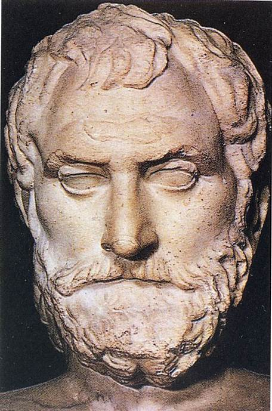
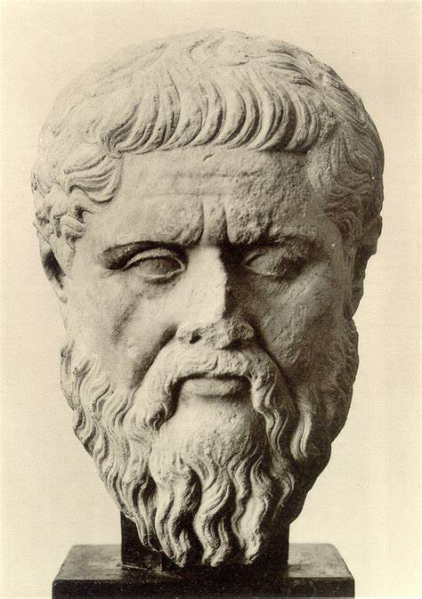
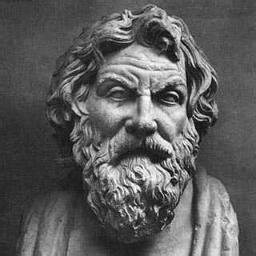

Pensadores Milesios
En Occidente, el surgimiento de la filosofía tuvo lugar en la ciudad griega de Mileto, situada en la costa de la actual Turquía; de ahí la denominación de filósofos milesios o de la escuela de Mileto que reciben los pensadores que, a lo largo del siglo VI a.C., abandonaron los tradicionales enfoques religiosos y mitológicos e intentaron dar respuestas racionales a las cuestiones, adoptando así por primera vez la actitud que reconocemos como propia de la filosofía.
La cuestión filosófica que más interesó a los filósofos milesios (quienes, por otra parte, emprendieron también variadas investigaciones y especulaciones científicas) fue la determinación de un principio constitutivo y originario (el arjé o arché) común a todas las cosas; los milesios supusieron que, tras la aparente variedad de seres que forman la fisis (naturaleza o mundo físico), existía un substrato único que permitía dar cuenta de la constitución y origen de todos los seres.

Tales de Mileto
(Mileto, actual Turquía, 624 a.C. - 548 a.C.) Filósofo y matemático griego. Iniciador de la escuela de Mileto, la primera de las escuelas filosóficas de la antigua Grecia, es considerado el primer filósofo por su aspiración a establecer una explicación racional de los fenómenos de la naturaleza, trascendiendo el tradicional enfoque mitológico que había caracterizado la cultura griega arcaica. Tales fue el primero que sostuvo la existencia de un arjé, es decir, de un principio constitutivo y originario común a todas las cosas, que identificó con el agua;
Para Tales de Mileto, el arjé es el agua: todo nace del agua, la cual es el elemento básico del que están hechas todas las cosas. Aunque tampoco conocemos con certeza las razones que le llevaron a establecer el agua como arjé, sus comentaristas coinciden en aventurar algunas. El agua es la materia que se encuentra en mayor cantidad, rodea la tierra y corre a través de los continentes; impregna la atmósfera en forma de vapor, que es aire, nubes y éter, y del agua se forman los cuerpos sólidos al condensarse; por carecer de determinaciones (estado, forma, color, olor), es apta para determinarse. El agua, por otra parte, es condición necesaria de lo vivo: hace germinar las semillas y es imprescindible para las plantas y los animales, hasta el punto de que la vida no es posible sin ella. 
Anaximandro
(Mileto, hoy desaparecida, actual Turquía, 610 a.C. - id., 545 a.C.) Filósofo, geómetra y astrónomo griego, discípulo de Tales de Mileto, Anaximandro fue miembro de la escuela de Mileto, y sucedió a Tales en la dirección de la misma. Anaximandro de Mileto supuso la existencia de un arjé o principio constitutivo y originario común a todos los seres de la naturaleza. Pero a diferencia de sus compañeros de escuela, que identificaron el arjé con una sustancia física (el agua en Tales de Mileto, el aire en Anaxímenes), Anaximandro estableció como primer principio el ápeiron, término que puede traducirse como «lo indeterminado» o «lo indefinido».
Anaximandro sobre el origen de los seres vivos y del hombre. Todos proceden del fenómeno húmedo (la tierra en un principio era líquida, y por el proceso de disociación, lo húmedo dio lugar a lo viviente). El hombre tuvo como primeros antepasados a los peces y luego a otros animales primitivos. Con razón, por lo tanto, podría ser considerado como el primer cosmólogo y como el antecesor (aunque sin ningún apoyo en evidencias científicas) de la moderna teoría de la evolución. En su filosofía, Anaximandro coincide con Tales de Mileto en defender que existe un solo principio básico (arjé o arché) como generador de todas las cosas, al que Anaximandro llamó ápeiron (lo indefinido o indeterminado): una sustancia indeterminada, ilimitada e infinita, que es a la par eterna. Sólo el ápeiron es incorruptible e imperecedero.
Anaximenes
(Mileto, h. 588 a.C. - ?, h. 534 a.C.) Filósofo griego, último representante, después de Tales y Anaximandro, de la escuela Milesia. Discípulo de Anaximandro, se desconocen la mayor parte de los detalles de la biografía de Anaxímenes de Mileto y de sus actividades. El historiador Apolodoro de Atenas afirma que vivió hacia la época de la toma de Sardes y murió antes de que la ciudad de Mileto fuera destruida. Al parecer, Anaxímenes llevó a cabo diversas investigaciones astronómicas y meteorológicas y, según Diógenes Laercio, escribió una obra hoy perdida que se tituló Sobre la naturaleza.
Anaxímenes explicó el origen de todas las cosas a partir de un doble proceso por el que el aire se modifica: rarefacción, que da origen al fuego, y condensación, del que se derivan las nubes, el agua, la tierra y las rocas. Con estas dos nociones, Anaxímenes describió los cambios de la naturaleza, o lo que es lo mismo, dos modalidades de movimiento: la cuantitativa y la cualitativa. Las cosas no son más que aire en distinto grado de condensación o de dilatación. El fuego es aire en su punto máximo de dilatación o de calor; el viento no es más que aire condensado que, al condensarse más, se convierte en nube, después en agua, y luego en tierra y rocas.
De un fragmento conservado de su obra se desprende que Anaxímenes concibió el mundo como un ser vivo, análogamente a como concebía el alma de los hombres: «De la misma manera que nuestra alma, que es aire, nos sostiene, igualmente un soplo y el aire envuelven el mundo entero.» El aire es también la fuerza vivificadora: el universo es una especie de ser vivo que respira y se mantiene en ordenada unión, envuelto por el aire infinito; la misma alma humana, fundida en el alma del mundo, es también aire.
